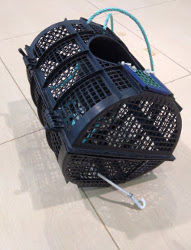
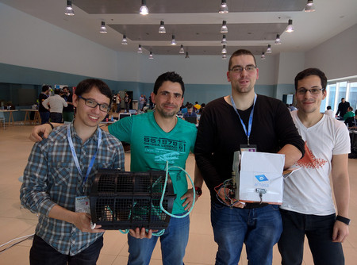

Hackathon Sanjurjo Badía, de idea a proyecto viable
Este artículo es un borrador
En dos palabras, ¡IM PRESIONANTE! :-).
Saliendo ya de la nube después de un intenso fin de semana. Adam, David, Jorge y José Manuel decidimos pasar el 28 y 29 de febrero jugando a hacer “puzzles”. Un caja de cartón, un “mini ordenador”, sensores, cables, varios lenguajes de programación y una idea, construir entre todos un dispositivo interesante y que además, funcione, una nasa “inteligente”.
Llegamos, nos sentamos y tras el primer café asistimos a un par de charlas que nos van metiendo en el tema. Carlos Groba presenta a Marine Instruments, una empresa gallega con sede en Nigrán, un caso de éxito con 100 empleados que ha desplegado 25.000 boyas interconectadas por todo el mundo para asistir a los atuneros con datos que les permitan tomar decisiones para pescar de forma más eficiente. Espectacular y un gran comienzo para entender la importancia económica de las nuevas tecnologías en un sector clave para Vigo, Galicia y España como es el marítimo.

Una segunda charla, de carácter más técnico, impartida por Michelangelo, miembro del equipo que ha llevado adelante el proyecto UDOO. Nos explica las particularidades de los “miniordenadores” UDOO, unas placas que serán las que utilizaremos. Estas placas integran lo mejor de distintos mundos y multitud de sensores para permitir recibir datos del “mundo real”, permitiendo a los profesionales y aficionados “montar puzzles” que van desde dirigir un robot a controlar el estado de la caldera de nuestros hogares.
Al igual que un corredor al inicio de un maratón, las emociones son encontradas, el deseo de disfrutar al máximo, la curiosidad por descubrir los detalles de la ruta y el respeto ante lo que se antoja que podría no ser fácil. Y que seguro dejará más de un lesionado.
¡Arrancamos! dispuestos a terminar con los brazos en alto y orgullosos de salir de nuestra “zona de confort”, profesionalmente hablando.
Ochenta profesionales reunidos en el Auditorio Mar de Vigo, repartidos en diferentes grupos. Competimos entre nosotros pero nadie piensa en ello, concentración, a veces desesperación y un claro espíritu deportivo inunda el ambiente.
"¡Chicos, a las cinco y media de esta tarde esto tiene que estar funcionando y tenemos que tener una presentación hecha!". Esta era una de las frases que golpeaban nuestra cabeza con más intensidad el domingo por la mañana, junto con otras que no se podrían reproducir en horario infantil. Reparto de tareas siguiendo la metodología Kanban, motivación al 150%, comunicación intensa y continua entre nosotros y miembros de otros equipos para resolver problemas técnicos …. ¡cabalgamos, Sancho!
“Salís en el Faro de Vigo” nos comenta uno de los organizadores. Entre las fotos del artículo estamos nosotros. Pues sí, salimos guapos :-)

... seguimos ...
Un fabricante local de nasas aparece por allí. Animado y muy hablador, le ha gustado lo que ha visto en el periódico y nos quiere echar una mano. Nos “regala” un par de nasas reales por si nos pueden servir de algo. Nos despedimos con un buen apretón de manos y ...
... seguimos ...
Llega el momento. Hay proyectos muy buenos y nos toca presentar el nuestro, una nasa con sensores capaz de enviar a un servicio web su posición y si hay “bicho” o no en su interior. Vaya, ¡hemos ganado gente! nos miramos entre nosotros con algo de sorpresa, estamos contentos de lo que hemos conseguido ya que al fín y al cabo veníamos a jugar.

Nuestro agradecimiento a Vigolabs, a las empresas patrocinadoras y a Jesús Sayar y Eloy Coto en particular por el enooorme trabajo que ha supuesto organizar un evento como el Hackathon Sanjunrjo Badía.
Para algunos ha sido la primera vez que participamos en un hackathon, seguro que repetimos si nuestras respectivas agendas lo permiten.
Y para muestra de lo que allí se vivió, un botón, un pequeño vídeo en time-lapse
¡colabora, construye y disfruta!
Animamos a profesionales y aficionados del sector a hacerlo. Independientemente del resultado, es una experiencia que vale la pena.
Sal de tu zona de confort. Sólo se puede crecer si estás dispuesto a sentirte incómodo al intentar algo nuevo
— Brian Tracy